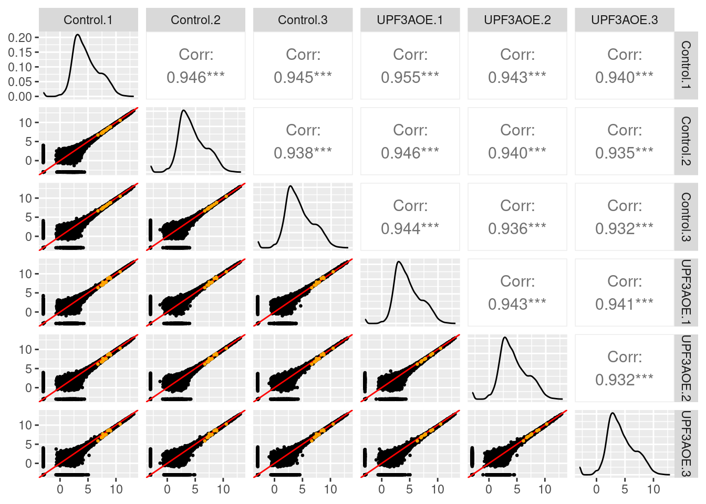
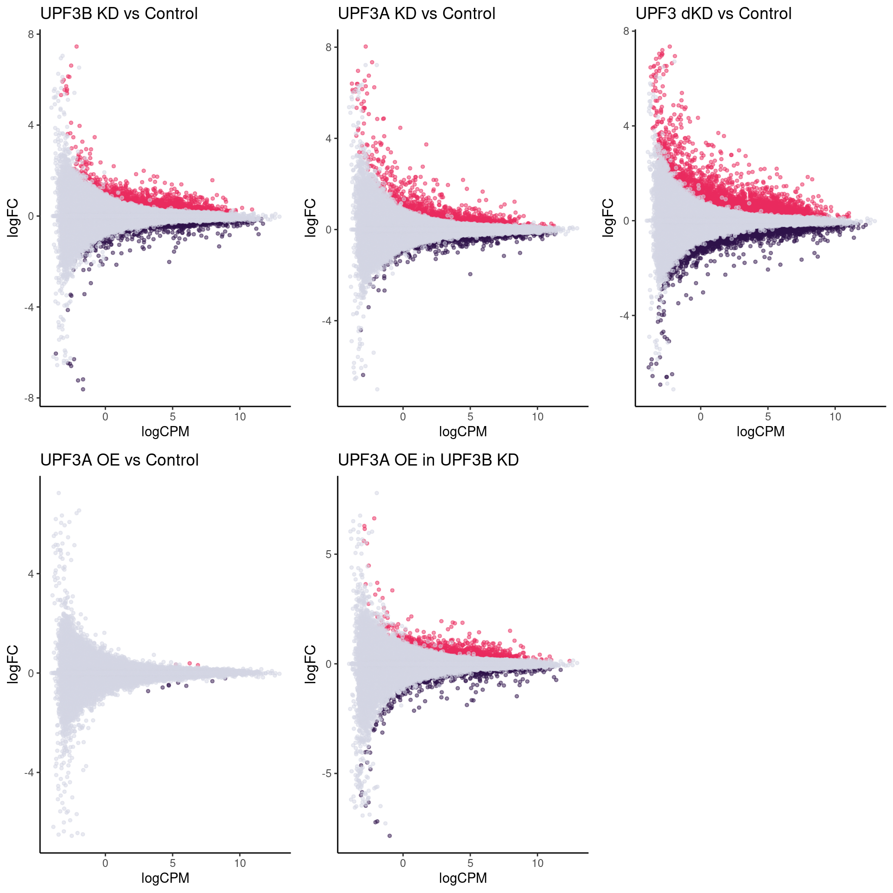
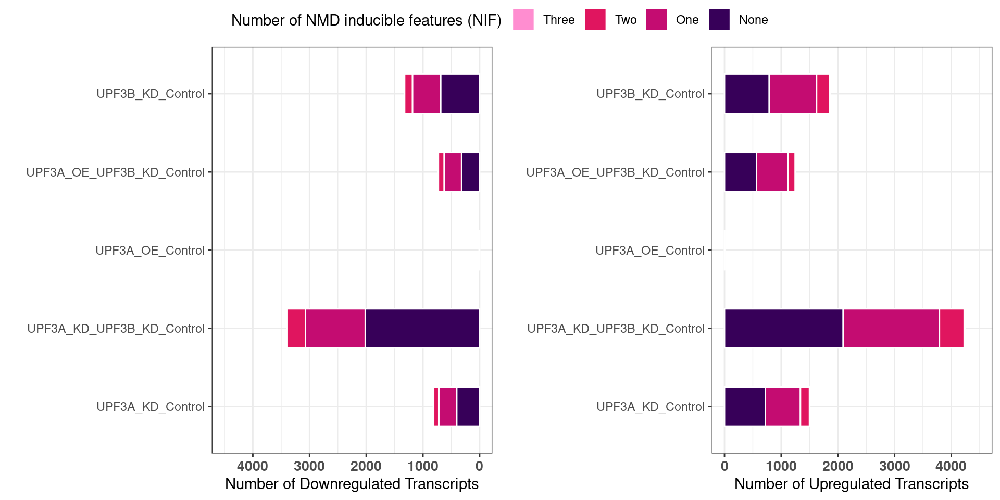
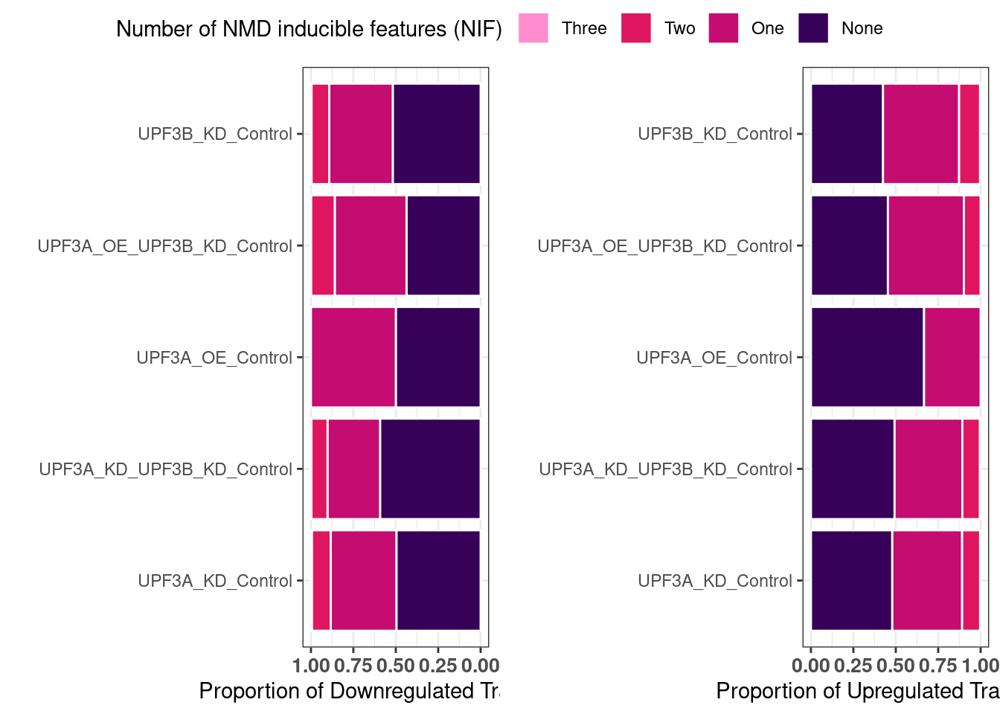
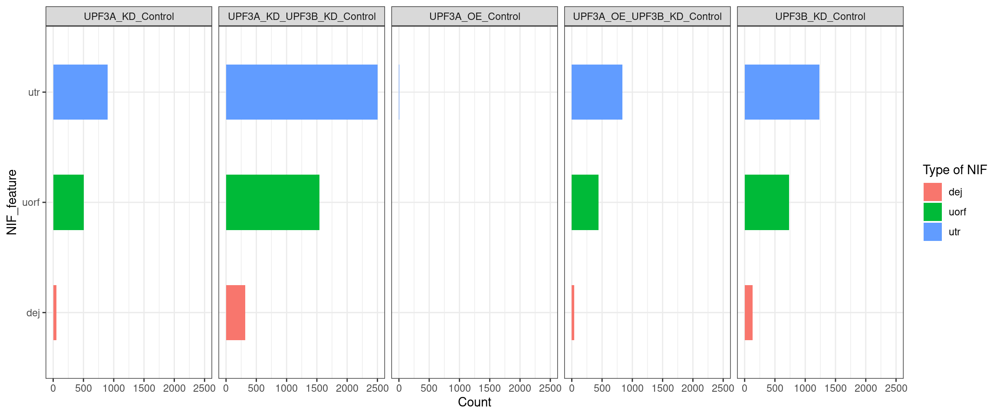
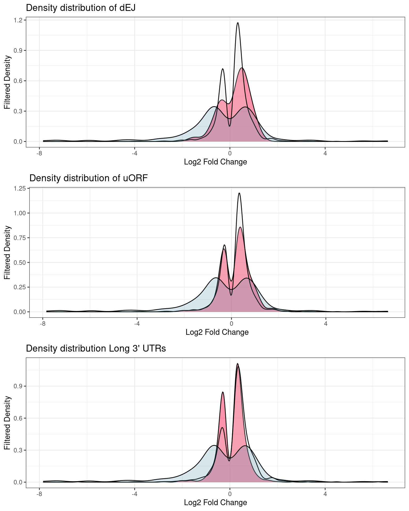

Differential-transcript-expression
unawaz1996
2023-03-26
Last updated: 2023-05-10
Checks: 6 1
Knit directory: NMD-analysis/
This reproducible R Markdown analysis was created with workflowr (version 1.7.0). The Checks tab describes the reproducibility checks that were applied when the results were created. The Past versions tab lists the development history.
Great! Since the R Markdown file has been committed to the Git repository, you know the exact version of the code that produced these results.
Great job! The global environment was empty. Objects defined in the global environment can affect the analysis in your R Markdown file in unknown ways. For reproduciblity it’s best to always run the code in an empty environment.
The command set.seed(20230314) was run prior to running
the code in the R Markdown file. Setting a seed ensures that any results
that rely on randomness, e.g. subsampling or permutations, are
reproducible.
Great job! Recording the operating system, R version, and package versions is critical for reproducibility.
Nice! There were no cached chunks for this analysis, so you can be confident that you successfully produced the results during this run.
Using absolute paths to the files within your workflowr project makes it difficult for you and others to run your code on a different machine. Change the absolute path(s) below to the suggested relative path(s) to make your code more reproducible.
| absolute | relative |
|---|---|
| /home/neuro/Documents/NMD_analysis/Analysis/NMD-analysis/output/Transcript/Thesis_figures/total_exp_up.svg | output/Transcript/Thesis_figures/total_exp_up.svg |
| /home/neuro/Documents/NMD_analysis/Analysis/NMD-analysis/output/Transcript/Thesis_figures/total_exp_down.svg | output/Transcript/Thesis_figures/total_exp_down.svg |
Great! You are using Git for version control. Tracking code development and connecting the code version to the results is critical for reproducibility.
The results in this page were generated with repository version b963fdb. See the Past versions tab to see a history of the changes made to the R Markdown and HTML files.
Note that you need to be careful to ensure that all relevant files for
the analysis have been committed to Git prior to generating the results
(you can use wflow_publish or
wflow_git_commit). workflowr only checks the R Markdown
file, but you know if there are other scripts or data files that it
depends on. Below is the status of the Git repository when the results
were generated:
Ignored files:
Ignored: .Rhistory
Ignored: .Rproj.user/
Ignored: analysis/Differential-transcript-usage.nb.html
Ignored: analysis/Enichment-analysis-fgsea.nb.html
Ignored: analysis/Enichment-analysis-goseq.nb.html
Untracked files:
Untracked: PCA.png
Untracked: PCA_plot.pdf
Untracked: PCA_transcript.png
Untracked: analysis/Differential-transcript-usage.Rmd
Untracked: analysis/UPF3B_KD.Rmd
Untracked: analysis/transcript-preprocessing.Rmd
Untracked: code/eisaR.R
Untracked: code/external_code/
Untracked: data/LTK_Sample Metafile_V3.txt
Untracked: data/Mus_musculus.GRCm39.105__nifs.tsv
Untracked: data/data.txt
Untracked: data/data2.txt
Untracked: data/fastqc/
Untracked: data/nif_output/
Untracked: data/samples.txt
Untracked: output/DEG-limma-results.Rda
Untracked: output/DEG-list.Rda
Untracked: output/DEG/
Untracked: output/EISA/
Untracked: output/ISAR/
Untracked: output/QC/
Untracked: output/Transcript/
Untracked: output/isoformSwitchAnalyzeR_isoform_AA_complete.fasta
Untracked: output/isoformSwitchAnalyzeR_isoform_AA_subset_1_of_3.fasta
Untracked: output/isoformSwitchAnalyzeR_isoform_AA_subset_2_of_3.fasta
Untracked: output/isoformSwitchAnalyzeR_isoform_AA_subset_3_of_3.fasta
Untracked: output/isoformSwitchAnalyzeR_isoform_nt.fasta
Untracked: output/limma-matrices.Rda
Untracked: tmp/
Unstaged changes:
Modified: analysis/Enichment-analysis-fgsea.Rmd
Modified: analysis/Enichment-analysis-goseq.Rmd
Modified: analysis/RNA-stability.Rmd
Modified: analysis/_site.yml
Modified: code/functions.R
Modified: code/libraries.R
Note that any generated files, e.g. HTML, png, CSS, etc., are not included in this status report because it is ok for generated content to have uncommitted changes.
These are the previous versions of the repository in which changes were
made to the R Markdown
(analysis/Differential-transcript-expression.Rmd) and HTML
(docs/Differential-transcript-expression.html) files. If
you’ve configured a remote Git repository (see
?wflow_git_remote), click on the hyperlinks in the table
below to view the files as they were in that past version.
| File | Version | Author | Date | Message |
|---|---|---|---|---|
| Rmd | b963fdb | unawaz1996 | 2023-05-10 | Add transcript expression |
Things to do:
- QC plots and normalization
- Transcript level QC - DONE
- PCA - DONE
- BCV and other edgeR associated plots - DONE
- bigPint plot interpretations
- DET analysis - all data
- MA plots for all analyses - DONE
- Log fold change distribution - DONE
- Ratio of up/down
- Pvalue histograms - DONE
- NIF enrichment
- How many transcripts that are DE have multiple NIF features - DONE
- Is NIF enrichment in a given analysis significant - DONE
- Number of individual NIF in DET analysis - DONE
- Distribution of NIFs in DETs - DONE
- How many genes have multiple DETs, and how many of those have NIFs?
- Overlap of transcripts between UPF3B and UPPF3A and NIF distribution of those alignments? - DONE
- Overlap of UPF3B sig only transcripts with UPF3B and NIF distribution - DONE
- Overlap of UPF3A sig only transcripts with UPF3A and NIF distribution - DONE
- Overlap of UPF3B KD and UPF3A OE in UPF3B KD and NIF distribution? –> What is the logFC of overlapping transcripts?
- Overlap of UPF3B KD sig only transcripts in UPF3A OE in UPF3B KD and vice versa
Introduction
Set-up
Transcript-level counts were retrieved using the
catchSalmon() function from the edgeR package. Once
retrieved, the counts underwent rigourous QC.
Removal of outlier sample
According to the quality control analysis, it was revealed that one of the samples was not clustering with its condition group. Investigation into GC content, transcript length and library size revealed no contribution of these factors. To ensure we are getting results that are not skewed we will remove the sample from the transcript level analysis.

Principal component analysis of transcript level data. PCA was performed on log2 transformed CPM after filtering lowly expressed genes. The PCA shows that samples are clustering close to their conditions based on PC1, however one of the samples of the UPF3A OE in UPF3B KD cell line (sample 223), seems to deviate from its condition group and the rest of the data, so needs to be further investigated

Analysis

[1] 0.01177187Biological coeficcient of variation plot against the average abundance of each transcript. The plot shows the square-root estimates of the common, trended and tagwise NB dispersions.

Quasi-likelihood dispersion aganist gene abundance. Estimates are shown for raw, tended and squeezed dispersions
Min. 1st Qu. Median Mean 3rd Qu. Max.
14.32 14.32 14.32 14.32 14.32 14.32 Checking normalization and QC
$Control_UPF3BKD
$Control_UPF3AOE
Distribution of results
Fold change distributions


DET statistics



Distribution of NIFs

Are DET shared between UPF3B KD and UPF3A KD?
sign.lfc
-1 1
1328 1860 sign.lfc
-1 1
816 1504 


What is the distribution between transcripts in UPF3B KD and UPF3A OE?


R version 4.2.2 Patched (2022-11-10 r83330)
Platform: x86_64-pc-linux-gnu (64-bit)
Running under: Ubuntu 22.04.2 LTS
Matrix products: default
BLAS: /usr/lib/x86_64-linux-gnu/blas/libblas.so.3.10.0
LAPACK: /usr/lib/x86_64-linux-gnu/lapack/liblapack.so.3.10.0
locale:
[1] LC_CTYPE=en_AU.UTF-8 LC_NUMERIC=C
[3] LC_TIME=en_AU.UTF-8 LC_COLLATE=en_AU.UTF-8
[5] LC_MONETARY=en_AU.UTF-8 LC_MESSAGES=en_AU.UTF-8
[7] LC_PAPER=en_AU.UTF-8 LC_NAME=C
[9] LC_ADDRESS=C LC_TELEPHONE=C
[11] LC_MEASUREMENT=en_AU.UTF-8 LC_IDENTIFICATION=C
attached base packages:
[1] grid stats4 tools stats graphics grDevices utils
[8] datasets methods base
other attached packages:
[1] bigPint_1.14.0 naniar_1.0.0
[3] glmpca_0.2.0 broom_1.0.4
[5] glue_1.6.2 ggfortify_0.4.16
[7] stargazer_5.2.3 tidyquant_1.0.7
[9] quantmod_0.4.21 TTR_0.24.3
[11] PerformanceAnalytics_2.0.4 xts_0.13.0
[13] zoo_1.8-11 ggside_0.2.2
[15] GeneOverlap_1.34.0 fishpond_2.4.1
[17] IsoformSwitchAnalyzeR_2.01.04 pfamAnalyzeR_0.99.0
[19] sva_3.46.0 genefilter_1.80.3
[21] mgcv_1.8-42 nlme_3.1-162
[23] satuRn_1.6.0 DEXSeq_1.44.0
[25] BiocParallel_1.32.6 ggrepel_0.9.3
[27] pander_0.6.5 msigdbr_7.5.1
[29] cowplot_1.1.1 ngsReports_2.0.3
[31] patchwork_1.1.2 VennDiagram_1.7.3
[33] futile.logger_1.4.3 UpSetR_1.4.0
[35] fgsea_1.24.0 GOplot_1.0.2
[37] RColorBrewer_1.1-3 gridExtra_2.3
[39] ggdendro_0.1.23 AnnotationHub_3.6.0
[41] BiocFileCache_2.6.1 dbplyr_2.3.2
[43] openxlsx_4.2.5.2 ggiraph_0.8.7
[45] wasabi_1.0.1 sleuth_0.30.1
[47] DT_0.27 VennDetail_1.14.0
[49] msigdb_1.6.0 GSEABase_1.60.0
[51] graph_1.76.0 annotate_1.76.0
[53] XML_3.99-0.14 pheatmap_1.0.12
[55] ggvenn_0.1.10 MetBrewer_0.2.0
[57] ggpubr_0.6.0 venn_1.11
[59] viridis_0.6.2 viridisLite_0.4.1
[61] tximeta_1.16.1 tximport_1.26.1
[63] goseq_1.50.0 geneLenDataBase_1.34.0
[65] BiasedUrn_2.0.9 org.Mm.eg.db_3.16.0
[67] EnsDb.Mmusculus.v79_2.99.0 ensembldb_2.22.0
[69] AnnotationFilter_1.22.0 GenomicFeatures_1.50.4
[71] AnnotationDbi_1.60.2 biomaRt_2.54.1
[73] edgeR_3.40.2 limma_3.54.2
[75] DESeq2_1.38.3 SummarizedExperiment_1.28.0
[77] Biobase_2.58.0 MatrixGenerics_1.10.0
[79] matrixStats_0.63.0 GenomicRanges_1.50.2
[81] GenomeInfoDb_1.34.9 IRanges_2.32.0
[83] S4Vectors_0.36.2 BiocGenerics_0.44.0
[85] corrplot_0.92 lubridate_1.9.2
[87] forcats_1.0.0 purrr_1.0.1
[89] readr_2.1.4 tidyverse_2.0.0
[91] stringr_1.5.0 tidyr_1.3.0
[93] scales_1.2.1 data.table_1.14.8
[95] readxl_1.4.2 tibble_3.2.1
[97] magrittr_2.0.3 reshape2_1.4.4
[99] ggplot2_3.4.2 dplyr_1.1.1
[101] workflowr_1.7.0
loaded via a namespace (and not attached):
[1] Hmisc_5.0-1 ps_1.7.4
[3] Rsamtools_2.14.0 rprojroot_2.0.3
[5] crayon_1.5.2 MASS_7.3-58.3
[7] rhdf5filters_1.10.1 backports_1.4.1
[9] rlang_1.1.0 XVector_0.38.0
[11] callr_3.7.3 filelock_1.0.2
[13] rjson_0.2.21 bit64_4.0.5
[15] parallel_4.2.2 processx_3.8.0
[17] shinydashboard_0.7.2 tidyselect_1.2.0
[19] GenomicAlignments_1.34.1 xtable_1.8-4
[21] evaluate_0.20 cli_3.6.1
[23] zlibbioc_1.44.0 hwriter_1.3.2.1
[25] rstudioapi_0.14 whisker_0.4.1
[27] bslib_0.4.2 rpart_4.1.19
[29] fastmatch_1.1-3 locfdr_1.1-8
[31] lambda.r_1.2.4 shiny_1.7.4
[33] xfun_0.38 cluster_2.1.4
[35] caTools_1.18.2 KEGGREST_1.38.0
[37] interactiveDisplayBase_1.36.0 Biostrings_2.66.0
[39] png_0.1-8 reshape_0.8.9
[41] withr_2.5.0 bitops_1.0-7
[43] plyr_1.8.8 cellranger_1.1.0
[45] pillar_1.9.0 gplots_3.1.3
[47] cachem_1.0.7 fs_1.6.1
[49] vctrs_0.6.1 ellipsis_0.3.2
[51] generics_0.1.3 foreign_0.8-84
[53] munsell_0.5.0 DelayedArray_0.24.0
[55] fastmap_1.1.1 compiler_4.2.2
[57] abind_1.4-5 httpuv_1.6.9
[59] rtracklayer_1.58.0 plotly_4.10.1
[61] GenomeInfoDbData_1.2.9 lattice_0.20-45
[63] utf8_1.2.3 later_1.3.0
[65] Quandl_2.11.0 jsonlite_1.8.4
[67] GGally_2.1.2 pbapply_1.7-0
[69] carData_3.0-5 lazyeval_0.2.2
[71] promises_1.2.0.1 car_3.1-2
[73] checkmate_2.1.0 rmarkdown_2.21
[75] statmod_1.5.0 BSgenome_1.66.3
[77] survival_3.5-5 yaml_2.3.7
[79] systemfonts_1.0.4 htmltools_0.5.5
[81] memoise_2.0.1 BiocIO_1.8.0
[83] locfit_1.5-9.7 quadprog_1.5-8
[85] digest_0.6.31 mime_0.12
[87] rappdirs_0.3.3 futile.options_1.0.1
[89] RSQLite_2.3.1 blob_1.2.4
[91] labeling_0.4.2 splines_4.2.2
[93] Formula_1.2-5 Rhdf5lib_1.20.0
[95] ProtGenerics_1.30.0 RCurl_1.98-1.12
[97] hms_1.1.3 rhdf5_2.42.0
[99] colorspace_2.1-0 base64enc_0.1-3
[101] BiocManager_1.30.20 nnet_7.3-18
[103] sass_0.4.5 Rcpp_1.0.10
[105] fansi_1.0.4 tzdb_0.3.0
[107] R6_2.5.1 lifecycle_1.0.3
[109] formatR_1.14 zip_2.2.2
[111] curl_5.0.0 ggsignif_0.6.4
[113] jquerylib_0.1.4 svMisc_1.2.3
[115] Matrix_1.5-3 htmlwidgets_1.6.2
[117] timechange_0.2.0 htmlTable_2.4.1
[119] codetools_0.2-19 GO.db_3.16.0
[121] gtools_3.9.4 getPass_0.2-2
[123] prettyunits_1.1.1 SingleCellExperiment_1.20.1
[125] gtable_0.3.3 DBI_1.1.3
[127] git2r_0.31.0 visdat_0.6.0
[129] httr_1.4.5 highr_0.10
[131] KernSmooth_2.23-20 vroom_1.6.1
[133] stringi_1.7.12 progress_1.2.2
[135] farver_2.1.1 uuid_1.1-0
[137] hexbin_1.28.3 xml2_1.3.3
[139] admisc_0.31 boot_1.3-28.1
[141] restfulr_0.0.15 geneplotter_1.76.0
[143] BiocVersion_3.16.0 bit_4.0.5
[145] shinycssloaders_1.0.0 pkgconfig_2.0.3
[147] babelgene_22.9 rstatix_0.7.2
[149] knitr_1.42